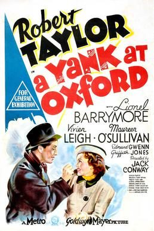
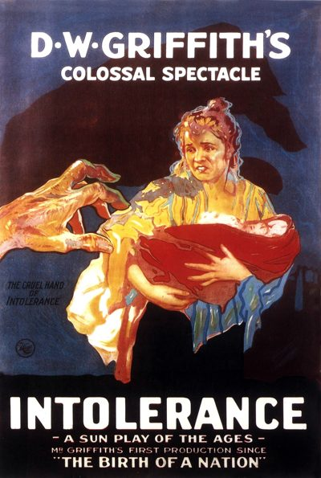

THE STANFORD THEATRE
Now Showing
·
Upcoming
·
Past
·
Search
February 26 - March 29, 1998
Fred Astaire ~ Silent Movie Saturdays
13 bills
February 26, 27
Waterloo Bridge (1940)
108 min

A Yank at Oxford (1938)
102 min
February 28
Orphans of the Storm (1921)
150 min
March 1
Waterloo Bridge (1940)
108 min
A Yank at Oxford (1938)
102 min
March 5, 6
The Sky's the Limit (1943)
89 min
March 7

Intolerance (1916)
197 min
March 8
The Sky's the Limit (1943)
89 min
March 12, 13
Royal Wedding (1951)
93 min
Silk Stockings (1957)
117 min
March 14
Faust (1926)
106 min
March 15
Royal Wedding (1951)
93 min
Silk Stockings (1957)
117 min
March 19 - 21
Top Hat (1935)
101 min
Follow the Fleet (1936)
110 min
March 22
Top Hat (1935)
101 min
Follow the Fleet (1936)
110 min
March 26 - 28
Swing Time (1936)
103 min
Roberta (1935)
106 min
March 29
Swing Time (1936)
103 min
Roberta (1935)
106 min
Archived
•
StanfordTheatre.org Original